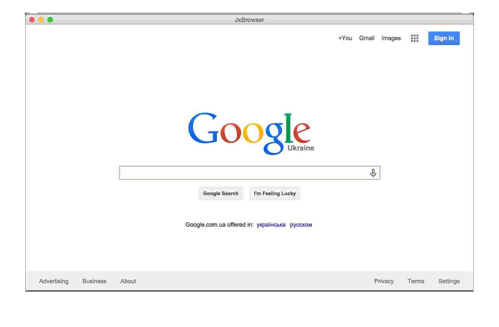
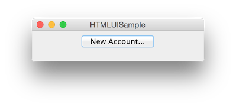
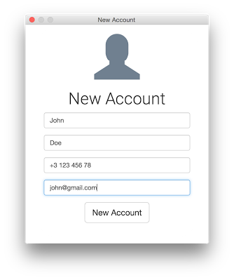
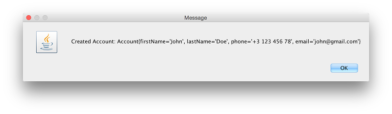

Note: Advice in this article will only work for JxBrowser 6. See the corresponding article for JxBrowser 7 here.(注意：本文中的建议仅适用于JxBrowser6，JxBrowser7相应文章请点击这里。)
There are a lot of desktop applications that integrate web browser control to display HTML content and communicate with web services and web applications directly from app: iTunes, Adobe Brackets, Evernote, Amazon Music, Steam Client, etc. If you develop similar type of a desktop application using Java technology, and you need to embed safe, fast, lightweight web browser control that supports all modern web technologies such as HTML5, CSS, JavaScript, Flash, etc., then JxBrowser is what you need.(有许多桌面应用程序集成了Web浏览器控件以显示HTML内容并直接通过应用程序与Web服务和Web应用程序进行通信：iTunes，Adobe Brackets，Evernote，Amazon Music，Steam Client等。如果您开发类似类型的使用Java技术的桌面应用程序，并且您需要嵌入安全，快速，轻量级的Web浏览器控件，以支持所有现代Web技术（例如HTML5，CSS，JavaScript，Flash等），那么，JxBrowser愿意为您效劳。)
The following code demonstrates how simple the process of embedding web browser component into your Java Swing/AWT/JavaFX desktop application:(以下代码演示了将Web浏览器组件嵌入到Java Swing / AWT / JavaFX桌面应用程序中的过程有多么简单：)
Swing/AWT
import com.teamdev.jxbrowser.chromium.Browser;
import com.teamdev.jxbrowser.chromium.swing.BrowserView;
import javax.swing.*;
import java.awt.*;
public class BrowserSample {
public static void main(String[] args) {
Browser browser = new Browser();
BrowserView browserView = new BrowserView(browser);
JFrame frame = new JFrame("JxBrowser");
frame.add(browserView, BorderLayout.CENTER);
frame.setSize(700, 500);
frame.setVisible(true);
browser.loadURL("http://www.google.com");
}
}
JavaFX
import com.teamdev.jxbrowser.chromium.Browser;
import com.teamdev.jxbrowser.chromium.BrowserCore;
import com.teamdev.jxbrowser.chromium.internal.Environment;
import com.teamdev.jxbrowser.chromium.javafx.BrowserView;
import javafx.application.Application;
import javafx.scene.Scene;
import javafx.scene.layout.BorderPane;
import javafx.stage.Stage;
public class JavaFXSample extends Application {
@Override
public void init() throws Exception {
// On Mac OS X Chromium engine must be initialized in non-UI thread.
if (Environment.isMac()) {
BrowserCore.initialize();
}
}
@Override
public void start(final Stage primaryStage) {
Browser browser = new Browser();
BrowserView view = new BrowserView(browser);
Scene scene = new Scene(new BorderPane(view), 700, 500);
primaryStage.setScene(scene);
primaryStage.show();
browser.loadURL("http://www.google.com");
}
public static void main(String[] args) {
launch(args);
}
}

{kind=link}
Desktop App UI built with HTML+CSS+JavaScript(使用HTML + CSS + JavaScript构建桌面应用程序)
With JxBrowser your Java desktop app UI can bebuilt with HTML+CSS+JavaScript. It means that you can actually use any modern HTML5 UI toolkit to build modern, user-friendly interface of your Java desktop application. You don’t need to hire Swing/AWT developers. GUI of your Java app can be built by HTML+CSS+JavaScript developers. It significantly reduces the cost of Java project development.(JxBrowser可以使用HTML + CSS + JavaScript构建Java桌面应用程序UI。这意味着您可以使用任何现代HTML5 UI工具包来构建用户界面友好的Java桌面应用程序。您可以解雇Swing/AWT开发人员，因为HTML + CSS + JavaScript开发人员可以构建Java应用程序的GUI，它大大降低了Java项目开发的成本。)
The following simple application demonstrates how to create New Account Dialog built with HTML+CSS+JavaScript into your Java Swing/AWT desktop application.(以下简单的应用程序演示了如何在Java Swing / AWT桌面应用程序中创建使用HTML + CSS + JavaScript构建的“新帐户对话框”。)
First we create HTML document with New Account dialog content. In the following document we use one of the most popular Bootstrap HTML UI framework to build dialog’s UI: (首先，我们使用“新帐户”对话框内容创建HTML文档。在以下文档中，我们使用最流行的HTML UI框架之一Bootstrap来构建对话框的UI：)
<!DOCTYPE html>
<html>
<head>
<meta charset="utf-8" />
<title>Registration Form</title>
<link href="http://maxcdn.bootstrapcdn.com/bootstrap/3.2.0/css/bootstrap.min.css" rel="stylesheet">
<link href='http://fonts.googleapis.com/css?family=Roboto:300' rel='stylesheet' type='text/css'>
<script src="http://code.jquery.com/jquery-1.11.1.min.js"></script>
<script src="http://maxcdn.bootstrapcdn.com/bootstrap/3.2.0/js/bootstrap.min.js"></script>
<style>
body{
font:12px/15px Roboto, "Helvetica Neue", Helvetica, sans-serif;
}
select,
input,
.btn {
font-family: "Helvetica Neue",Helvetica,Arial,sans-serif;
}
#wrapper{
margin:0 auto;
}
.main-form {
width: 360px;
min-height: 360px;
background: #fff;
border-radius: 60px;
margin:0px auto 20px;
padding: 20px;
}
.form-logo {
font-size: 100px;
color: #708090;
}
</style>
</head>
<body>
<script>
function newAccount() {
var firstName = document.getElementById("firstname").value;
var lastName = document.getElementById("lastname").value;
var phone = document.getElementById("phone").value;
var email = document.getElementById("email").value;
AccountService.createAccount(firstName, lastName, phone, email);
}
</script>
<div id="wrapper">
<div class="main-form">
<form action="#" method="POST">
<fieldset>
<div class="text-center">
<span class="form-logo glyphicon glyphicon-user"></span>
</div>
<div class="form-body">
<h1 class="form-title text-center">New Account</h1>
<div class="form-group">
<input class="form-control" type="text" id="firstname" name="firstname" placeholder="First Name">
</div>
<div class="form-group">
<input class="form-control" type="text" id="lastname" name="surname" placeholder="Last Name">
</div>
<div class="form-group">
<input class="form-control" type="text" id="phone" name="phone" placeholder="Phone">
</div>
<div class="form-group">
<input class="form-control" type="email" id="email" name="email" placeholder="Email">
</div>
<div class="form-group text-center">
<button class="btn btn-default btn-lg" type="button" onclick="newAccount();">New Account</button>
</div>
</div>
</fieldset>
</form>
</div>
</div>
</body>
</html>
This dialog has First Name, Last Name, Phone, Email text fields, and New Account button. In Java application we need to display a dialog with this HTML content, let the user to fill all text fields and click New Account button. In Java code we need to be notified when user clicks the button, read text fields values to create a new account in our application. The following Java example demonstrates how we can do it with JxBrowser: (此对话框具有“名字”，“姓氏”，“电话”，“电子邮件”文本字段和“新帐户”按钮。在Java应用程序中，我们需要显示一个包含此HTML内容的对话框，让用户填写所有文本字段，然后单击“新帐户”按钮。在Java代码中，当用户单击按钮，读取文本字段值以在我们的应用程序中创建新帐户时，我们需要得到通知。以下Java示例演示了如何使用JxBrowser做到这一点：)
import com.teamdev.jxbrowser.chromium.Browser;
import com.teamdev.jxbrowser.chromium.JSValue;
import com.teamdev.jxbrowser.chromium.events.FinishLoadingEvent;
import com.teamdev.jxbrowser.chromium.events.LoadAdapter;
import com.teamdev.jxbrowser.chromium.swing.BrowserView;
import javax.swing.*;
import java.awt.*;
import java.awt.event.ActionEvent;
import java.awt.event.ActionListener;
import java.awt.event.WindowAdapter;
import java.awt.event.WindowEvent;
import java.util.concurrent.atomic.AtomicReference;
/**
* The example demonstrates how to integrate UI built with HTML+CSS+JavaScript
* into Java desktop application.
*/
public class HTMLUISample {
public static void main(String[] args) {
final JFrame frame = new JFrame("HTMLUISample");
final JButton newAccountButton = new JButton("New Account...");
newAccountButton.addActionListener(new ActionListener() {
@Override
public void actionPerformed(ActionEvent e) {
Account account = createAccount(frame);
// Displays created account's details
JOptionPane.showMessageDialog(frame, "Created Account: " + account);
}
});
JPanel contentPane = new JPanel();
contentPane.add(newAccountButton);
frame.setDefaultCloseOperation(WindowConstants.EXIT_ON_CLOSE);
frame.add(contentPane, BorderLayout.CENTER);
frame.setSize(300, 75);
frame.setLocationRelativeTo(null);
frame.setVisible(true);
}
private static Account createAccount(JFrame parent) {
final AtomicReference<Account> result = new AtomicReference<Account>();
final JDialog dialog = new JDialog(parent, "New Account", true);
// Create Browser instance.
final Browser browser = new Browser();
browser.addLoadListener(new LoadAdapter() {
@Override
public void onFinishLoadingFrame(FinishLoadingEvent event) {
if (event.isMainFrame()) {
JSValue value = browser.executeJavaScriptAndReturnValue("window");
value.asObject().setProperty("AccountService",
new AccountService(dialog, result));
}
}
});
// Load HTML with dialog's HTML+CSS+JavaScript UI.
browser.loadURL("dialog.html");
dialog.addWindowListener(new WindowAdapter() {
@Override
public void windowClosing(WindowEvent e) {
// Dispose Browser instance because we don't need it anymore.
browser.dispose();
// Close New Account dialog.
dialog.setVisible(false);
dialog.dispose();
}
});
dialog.setDefaultCloseOperation(WindowConstants.DO_NOTHING_ON_CLOSE);
// Embed Browser Swing component into the dialog.
dialog.add(new BrowserView(browser), BorderLayout.CENTER);
dialog.setSize(400, 500);
dialog.setResizable(false);
dialog.setLocationRelativeTo(parent);
dialog.setVisible(true);
return result.get();
}
public static class AccountService {
private final JDialog dialog;
private final AtomicReference<Account> result;
public AccountService(JDialog dialog, AtomicReference<Account> result) {
this.dialog = dialog;
this.result = result;
}
public void createAccount(String firstName, String lastName, String phone, String email) {
result.set(new Account(firstName, lastName, phone, email));
SwingUtilities.invokeLater(new Runnable() {
@Override
public void run() {
dialog.setVisible(false);
}
});
}
}
public static class Account {
public final String firstName;
public final String lastName;
public final String phone;
public final String email;
public Account(String firstName, String lastName, String phone, String email) {
this.firstName = firstName;
this.lastName = lastName;
this.phone = phone;
this.email = email;
}
@Override
public String toString() {
return "Account{" +
"firstName='" + firstName + '\'' +
", lastName='" + lastName + '\'' +
", phone='" + phone + '\'' +
", email='" + email + '\'' +
'}';
}
}
}
Now run this Java application and click New Account button:(现在运行此Java应用程序，然后单击“新帐户”按钮：)

{kind=link}

Once user clicks New Account button, Java application is notified about click and reads new account information from the dialog:(用户单击“新帐户”按钮后，Java应用程序将收到有关单击的通知，并从对话框中读取新的帐户信息：)

Bring the power of Chromium engine into your Java desktop app!(将Chromium引擎的功能带入您的Java桌面应用程序叭！)